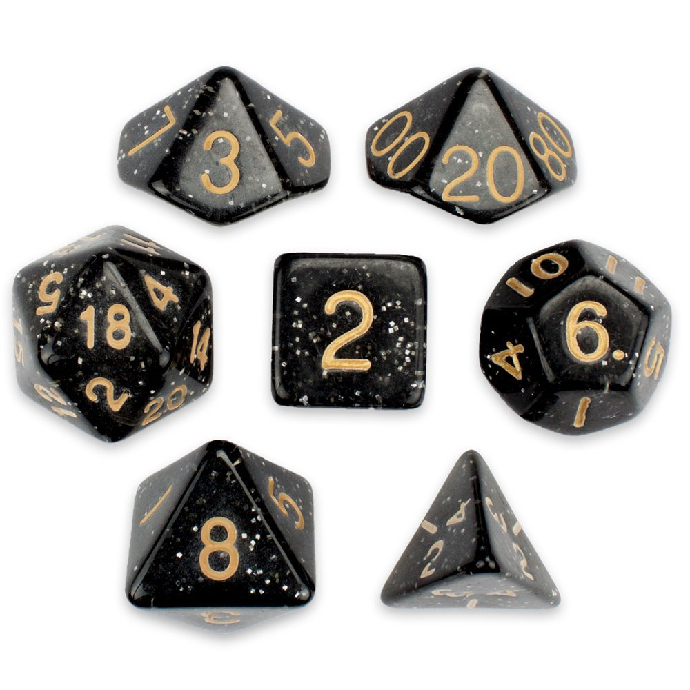
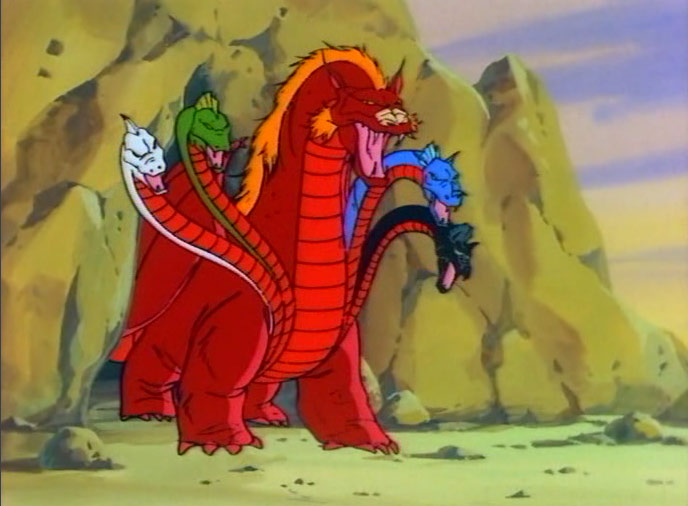
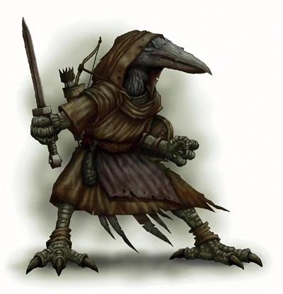
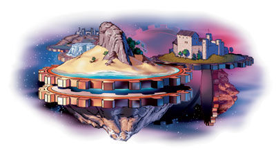
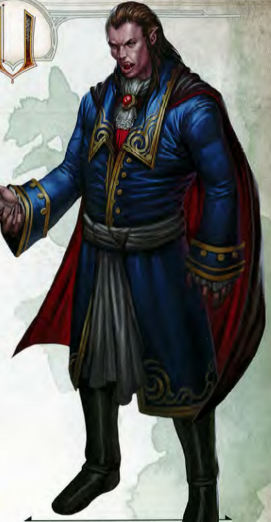

Bienvenido aventurero, llego la hora de probar tus conocimientos sobre el legendario juego de rol.
Estas preparado?
Los dados son la principal forma de interactuar con los distintos aspectos del juego, ya sean combate, pruebas de habilidad, etc. Que dado es el más usado en el juego?
Correcto! El d20 es el dado favorito y mas odiado de los jugadores de D&D.
Incorrecto. El dado usado mas frequentemente es el de 20 lados.
En Avernus reside Tiamat, la reina de los dragones cromáticos. Ella tiene cinco cabezas, cada una de un color distinto. Cuales son los cinco colores?
| Rojo | Amarillo | Verde |
| Azul | Negro | Blanco |
| Naranja | Celeste | Gris |
Correcto! Cada cabeza le permite disparar un aliento distinto, como fuego y acido.
Incorrecto. Los colores de las cabezas de Tiamat son Rojo, Blanco, Azul, Negro y Verde.
Múltiples razas existen en los Reinos Olvidados. Estas suelen ser categorizadas por tamaño, pudiendo ser medianas o pequeñas. Qué tamaño tiene la raza kenku?
Correcto! Los kenku parecen cuervos antropomorficos, dandoles un tamaño menor.
Incorrecto. El tamaño de un kenku es pequeño.
Los planos exteriores están atados a alineamientos en la guerra entre la ley y el caos, y entre el bien y el mal. Baator está alineado a la ley y el mal, Arbórea al caos y al bien. A que está alineado Mechanus?
| Ley y Bien | Neutralidad y Bien | Caos y Bien |
| Ley y Neutralidad | Neutralidad Total | Caos y Neutralidad |
| Ley y Mal | Neutralidad y Mal | Caos y Mal |
Correcto! Mechanus es un plano de estructura normativa, en el que se ignoran los conceptos de bien y mal.
Incorrecto. El alineamiento del plano Mechanus es Ley y Neutralidad.
La puntuación de desafío indica que tan poderoso es una criatura en combate. Un simple gato tiene una puntuación de 0, mientras que un dragón blanco antiguo tiene 20. Qué puntuación tiene un vampiro común?
Correcto! Los vampiros son criaturas poderosas, pero hay otras aun mas temibles.
Incorrecto. La puntuacion de desafio de un vampiro es 13.
0: Siempre es un buen momento para empezar a jugar.
1: Parece que hay que repasar un poco antes de volver al juego.
2: Vamos empezando a conocer al juego, el camino apenas empieza.
3: Nada mal. Sabes mas que el jugador promedio, pero aun te espera algo mas grande.
4: Casi perfecto. Tenes experiencia, pero siempre se puede ir por mas.
5: Todo un experto! Conoces el juego como pocos.